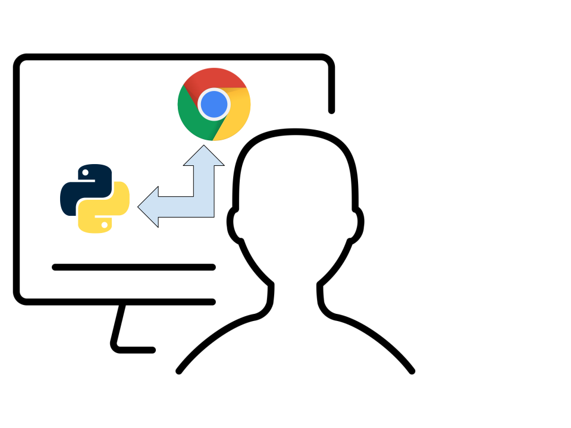
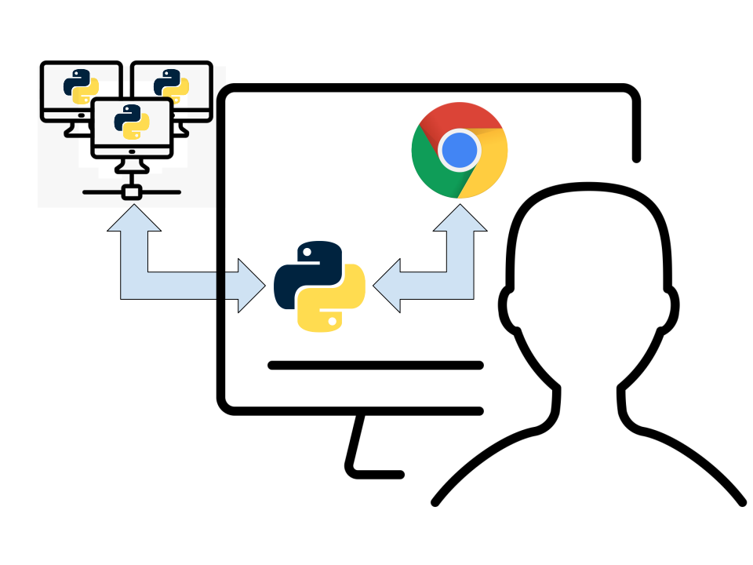

CASA/Viz Boundary¶
Note
Historical reference. This page describes the design and
implementation of the casagui package, as it stood after the
visualization trade study. cubevis grew out of that work. The page
is kept for reference and is not maintained; names, figures and plans in
it may no longer match cubevis. See Historical reference.
This document describes the boundary between CASA-GUI and CASA (including CASA7 and future versions of CASA). It is necessarily a high-level view of the principles of this boundary. However, it is important to layout the system level view of this boundary to prevent choices being made in the system design of other parts of the CASA and NRAO ecosystem.
For this discussion, only two execution modes will be considered. The “Usage Settings” in the introduction describe the user context where cubevis operates. The “Execution Modes” are less abstract than the “Usage Settings”. This lower level is discussed here both to explain the concepts as well as identify constraints that are implied by the implementaton of these modes.
The assumption is that there is a GUI and that it is always running on the user’s device. In practice, this means that the GUI will be presented in the user’s browser. The execution that we are talking about is the execution process that creates images, provides storage for images, modifies images, or collates and organizes data. These processes could also be on the user’s device, but they could also be running on remote systems.
Local Execution¶


With local execution, there is a local Python process which executes all of the image and data processing code. Currently, this is the user’s Python session. Communication between this Python process and the GUI code in the browser is accomplished with WebSocket. The user interacts with the elements of the GUI within the browser. These interactions result in WebSocket messages sent to the local Python environment. Within the Python environment, the interfaces provided by CASA and other packages are used to accomplish the desired processing, and the results are then returned to the GUI via WebSocket.
Remote Execution¶


Remote execution allows the user to start the GUI locally but perform the desired processing tasks on a remote system which the user can access with SSH. To start a remote processing execution, the user would first start a local Python session and then start the GUI element specifying the remote host that should be used. The GUI will start and run locally, but instead of the local Python session being used to perform the processing it will start a remote Jupyter Kernel on the specified remote system. Messages sent to the local Python session from the GUI via WebSocket will be converted to Jupyter Protocol messages sent to the remote kernel. These messages will then run the process using the same interfaces provided by CASA and other packages as was used for local execution.
These two execution models are sufficient as the basis for the usage settings described in the cubevis system document. A variant of these execution models may also be sufficent for a website implementation. The GUI elements created with Bokeh are compatible with display within a website. The remote Jupyter Kernel execution is compatible with processing initiated from a website. The details of the execution model between a public website portal and the backend execution model lies outside of the CASA/cubevis context.
Implications¶
The varied usage and execution environments emphasize a need to clearly separate the processing functionality from the GUI elements. Pushing as much functionality down into the processing level as possible as possible, maximizes the ability to test functionality as part of processing level testing, independent of GUI elements.
The second implication arises from supporting remote execution. Because processing results must be serialized and returned via WebSocket and displayed within a browser, the processing interface must be defined in terms of basic Python types or types which can be converted to basic Python types. An example of the latter is NumPy arrays. The interactive clean app uses NumPy arrays to represent the images which are displayed within Bokeh.
Example - Interactive Clean¶
A first version of an interactive clean application is being designed as follows. ( This initial release will not include remote execution, but its design does attempt to conform to the constraints which remote execution requires.)
A locally running GUI in a browser contains tools for image viewing, mask editing, setting/editing iteration control parameters, display and navigation of convergence plots. It also contains controls to trigger iteration blocks in the processing layer and retrieves processing results with which to update various elements of the display. The parameters and processing results are transferred from Python to a web browser for display. As a result, they are serializable.
Events from the GUI connect to the processing layer via call-back methods encapsulated within gclean, a backend application that runs the building blocks of image reconstruction and maintains iteration control state. This allows for independent testing of the process that supports the GUI. For this first version of interactive clean, we will consider gclean to be part of the public API from CASA.
The public process API from CASA that interactive clean depend upon is gclean and
the shape, maskhandler, coordsys, getregion, fitsheader,
getchunk, putchunk and statistics functions of the CASA image tool.
gclean¶
gclean is a Python class which encapsulates the process layer of interactive clean. It allows for automated testing of all of the process interface of interactive clean as part of the standard (non-interactive) testing of the process layer.
A gclean object is constructed with input parameters that are
relevant to interactive use. Once constructed,
gclean implements the Python iterator protocol.
This means that it provides __next__ and __iter__ functions. The __next__ function
provides the functionality required for
iterative image reconstruction
using calls to tclean for the residual update step, calls to deconvolve for the
model update step, and methods to manage iteration control state and checks for global stopping
criteria. Each time __next__ is (indirectly) called a new imaging return dictionary is returned
which contains new state from one model update and one residual update along with the state from
previous __next__ calls. The __next__ function is not invoked directly but indirectly
as part of a loop:
for imgdict in gclean(...):
# loop body
or with an explicit iterator call via next(gclean_object). Iteration control state is
maintained as the imaging return dictionary grows with each set of iteration blocks that are executed, and summarizes
the entire convergence history of the current imaging run. This imaging return dictionary is returned to the GUI
and used to update the contents of the convergence plots and convergence state messages.
gclean deviates somewhat from the typical iterator object by also
including an update function which accepts a dictionary of parameters to change for
the next generation step. These parameters are the modifications the user has indicated from
the interactive clean GUI.
The functions implemented within gclean are :
construct gclean object –
cl = gclean(...)The gclean object is constructed (with a subset of tclean parameters). Internal state is initialized, but no processing is done.run one set of iterations and retrieve the next convergence dictionary –
next(cl)One model update step (deconvolution) is run, followed by one residual update step (major cycle). For the initial call, only one residual update step is run. Iteration control state is defined by user-supplied parameters of code:niter, code:nmajor,cycleniterandthresholdand a series of ordered stopping criteria. The code:next(cl) function exits, and a dictionary returned after one major cycle is complete, after an error is encountered, or after global convergence criteria have been satisfied. Themaskwhich is provided specifies the area of the image cube to which the imaging algorithm should be applied. If themaskcontains all false or 0 values, no processing is performed.modifying iteration control setup –
cl.update( {...} )The purpose of interactive clean is to allow for adjustments to themaskand control parameters as processing progresses. This adjustment can be done before each call to code:next(cl). This update is optional and retrieving all dictionaries generated is expected to create the same final image as running gclean in a loop with no pauses in processing. The entries which can be supplied in the dictionary parameter areniter,cycleniter,niter,nmajor,threshold, andcyclefactor.updatereturns a tuple composed of an error code and a message. The first element of the tuple (error code) is zero if the update was successful and negative one if the update failed. If the update failed, the message contains an error message. In addition to updating the loop parameters withupdate, the mask image on disk may be modified directly.creating the restored image –
cl.restore( )called after the completion of the gclean processing. This creates the final, restored image and returns a dictionary which contains animagefield whose value is the path to the restored image.retrieve list of executed commands –
cl.cmds( history=False )called to retrieve the list oftclean,deconvolveetc. to display as a log for the user. Ifhistoryis set toTruethen the entire history is returned. Otherwise, the commands since the lastnext(gc)execution are returned.special Python functions that create an iterator –
__next__,__anext__(__anext__is an asyncio version of__next) should perform one model update step (deconvolution) is run, followed by one residual update step (major cycle). The special__iter__and__aiter__functions should just returnself, and the__del__function should runrestore.
The typical interactive clean pattern of gclean usage is:
cl = gclean( )
retdict = next(cl)
while user_continues( ):
cl.update( user_parameters( ) )
retdict = next(cl)
cl.restore( )
where user_continues enables interactive mask editing and then
checks whether the user wishes to stop and
user_parameters fetches updates to the control parameters from the user.
retdict is used to update convergence plots on the GUI.
The typical implementation of next(cl) within gclean is as follows:
if !has_converged(global_state):
ret_mod = run_model_update()
if ret_mod['iterdone']>0 :
ret_res = run_residual_update()
ret_dict = merge(ret_mod,ret_res)
global_state.append(ret_dict)
return read(global_state)
The interactive clean application currently being developed uses tclean for run_residual_update() and deconvolve for run_model_update(), and implements iteration control state and convergence checks using custom code within gclean. These building blocks could (in the future) be replaced to implement alternate options for the processing layer, as long as all the return dictionaries retain their structure.